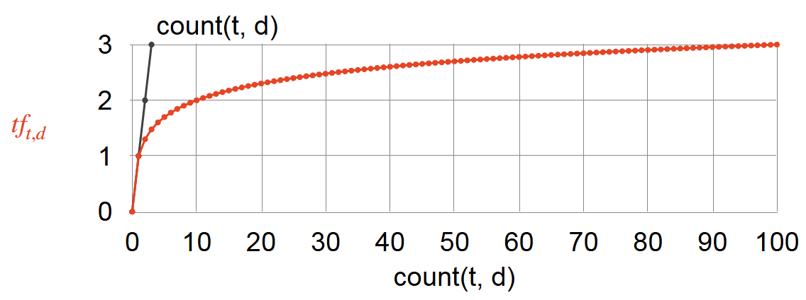
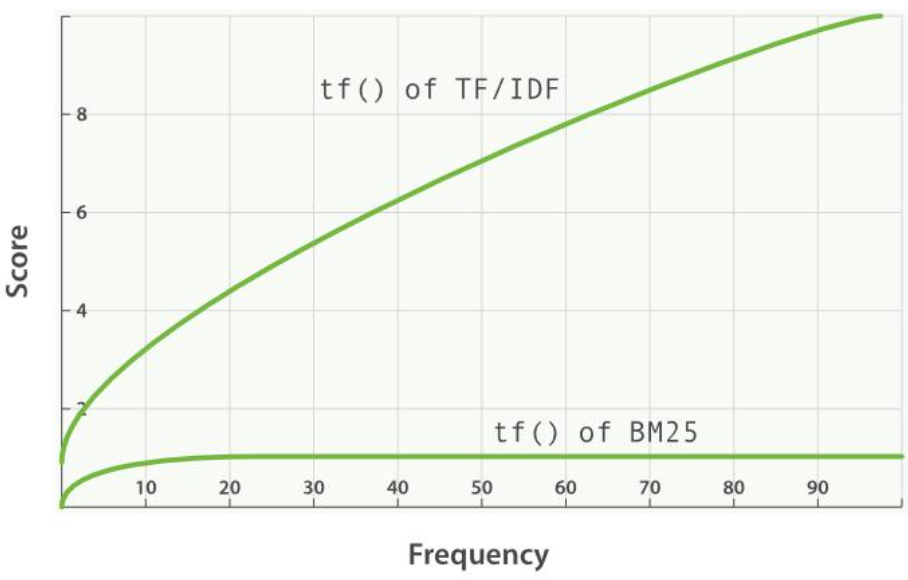

NLP - Text Representation
Natural Language Processing: Text Representation
Text Representation
Discrete Representation(Frequency Based)
Discrete representations are one of the earliest approaches for representing text in NLP. They treat each word as a unique symbol and represent it using a vector based on its position in the vocabulary. These methods usually generate high-dimensional sparse vectors, meaning most values in the vector are zero. Although they are simple and interpretable, they cannot capture semantic similarities between words.
One-Hot Encoding


One-Hot Encoding is one of the simplest ways to represent words numerically in Natural Language Processing. The basic idea is to assign each word in the vocabulary a unique index, and represent the word as a vector where:
- one position is 1
- all other positions are 0
If the vocabulary size is \(V\), each word is represented by a \(V\)-dimensional vector.
Limitation:
- High-dimensional vectors, Computationally expensive, infficient and Memory-intensive
- Does not capture Semantic Relationships/Similarity
- Restricted to the seen training vocabulary
Python Implementation
def one_hot_encode(text):
words = text.split() # Split the text by whitespace
vocabulary = set(words) # Keep the elements unique in the set
word_to_index = {word: i for i, word in enumerate(vocabulary)} # Assign index for each word in vocabulary, output will be like {word0 : 0, word1: 1, ...}
one_hot_encoded = []
for word in words: # For every word, create the vector with 0 and lenght of vocabulary firstly, then set the corresponding position to 1 according to the word index
one_hot_vector = [0] * len(vocabulary)
one_hot_vector[word_to_index[word]] = 1
one_hot_encoded.append(one_hot_vector)
return one_hot_encoded, word_to_index, vocabularyPython scikit-learn Implementation
from sklearn.preprocessing import OneHotEncoder
import numpy as np
# Example data
words = np.array(["cat", "dog", "fish", "cat"]).reshape(-1, 1)
# Create encoder
encoder = OneHotEncoder(sparse_output=False)
# Fit and transform
one_hot_vectors = encoder.fit_transform(words)
print("Vocabulary:", encoder.categories_)
print("One-hot vectors:\n", one_hot_vectors)Bag of Words (BoW)

Bag of Words is a simple and widely used method for representing text as numerical vectors. The core idea is to represent a document based on the frequency of words that appear in it, without considering the order of the words.
In the Bag of Words model, a vocabulary is first constructed from all unique words in the corpus. Each document is then represented as a vector whose length equals the size of the vocabulary. Each element in the vector indicates how many times a particular word appears in the document.
Limitations:
- It ignores word order and grammar
- It cannot capture semantic relationships between words
- It will be very hign-dimensinal when the vocabulary is large
Python Implementation
"""
Document
↓
Tokenization
↓
Count word frequency
↓
Map to vocabulary index
↓
Vector representation
"""
import numpy as np
# vocabulary (normally built from a corpus)
vocab = ["cat", "dog", "fish"]
# word -> index
word_to_index = {word: i for i, word in enumerate(vocab)}
def bow_encode(document):
vector = np.zeros(len(vocab))
words = document.split()
for word in words:
if word in word_to_index:
vector[word_to_index[word]] += 1
return vector
doc = "cat dog cat"
print(bow_encode(doc))Python scikit-learn Implementation
from sklearn.feature_extraction.text import CountVectorizer
documents = ["This is the first document.", "This document is the second document.", "And this is the third one.", "Is this the first document?"]
vectorizer = CountVectorizer()
X = vectorizer.fit_transform(documents)
feature_names = vectorizer.get_feature_names_out()
print("Bag-of-Words Matrix:")
print(X.toarray())
print("Vocabulary (Feature Names):", feature_names)TF-IDF
\(\text{TF-IDF: } w_{t,d} = tf_{t,d} \times idf_{t}\)
TF-IDF (Term Frequency–Inverse Document Frequency) is a weighted text representation method based on Bag of Words. It measures not only how often a word appears in a document, but also how important that word is across the whole corpus.
The basic idea is that a word should receive a high weight if it appears frequently in the current document but rarely in other documents. This makes TF-IDF more informative than simple word counts, because common words across many documents are given lower importance. TF-IDF is widely used in text classification, information retrieval, keyword extraction, and document similarity tasks. However, like other discrete representations, it still produces sparse vectors and cannot capture semantic or contextual relationships between words.
Term Frequency:
\(\text{Raw TF: } TF(t,d) = \text{count}(t,d)\)
\(\text{Normal TF: } TF(t,d) = \frac{\text{Number of times term t appears in document d}}{\text{Total number of terms in documnet d}}\)
\(\text{Log TF: } tf_{t,d} = \begin{cases} 1 + \log_{10}(\text{count}(t,d)) & \text{if } \text{count}(t,d) > 0 \\ 0 & \text{otherwise} \end{cases}\)

\(\text{Binary TF: } TF(t,d) = \begin{cases} 1 & t \in d \\ 0 & \text{otherwise} \end{cases}\)
\(\text{Augmented TF: }TF(t,d) = 0.5 + 0.5 \frac{\text{count}(t,d)} {\max_{t'} \text{count}(t',d)}\)
Inverse Document Frequency(N = number of documents, df(t) = how many documents token t occurs in):
- \(\text{Raw IDF: } IDF(t,D) = \log \frac{\text{Total number of documents in corpus N}}{\text{Number of documnents containing term t}}\) \(idf(t) = \log\left(\frac{N}{df_t} \right)\)

- \(\text{Smoothed IDF: } idf(t) = \log \left(\frac{N}{1+df_t} \right) + 1\)
- \(\text{Probabilistic IDF: }idf(t) = \log\left(\frac{N - df_t}{df_t} \right)\)
- \(\text{Max IDF: }\log\left(\frac{\max_{t' \in D} d_{t'}}{1 + d_t}\right)\)
Example
Suppose we have the following corpus:
- D1: data science is fun
- D2: data science uses data
- D3: machine learning is fun
We want to compute the Log TF-IDF of the term \(data\) in document \(D2\).
The log-scaled term frequency is defined as:
\[ tf(t,d) = \begin{cases} 1 + \log_{10}(count(t,d)) & \text{if } count(t,d) > 0 \\ 0 & \text{otherwise} \end{cases} \]
Since \(count(data, D2) = 2\),
\[ tf(data, D2) = 1 + \log_{10}(2) \approx 1.301 \]
The inverse document frequency is:
\[ idf(t) = \log_{10}\left(\frac{N}{df_t}\right) \]
Here, \(N = 3\) and \(df_{data} = 2\), so:
\[ idf(data) = \log_{10}\left(\frac{3}{2}\right) \approx 0.176 \]
Therefore, the TF-IDF value is:
\[ tfidf(data, D2) = tf(data, D2) \times idf(data) \]
\[ tfidf(data, D2) = 1.301 \times 0.176 \approx 0.229 \]
Python Implementation
import math
from collections import Counter
def compute_tfidf(documents):
"""
Compute TF-IDF vectors for a list of documents.
Parameters:
documents (list[str]): A list of input documents.
Returns:
tfidf_vectors (list[dict]): TF-IDF vector for each document.
vocabulary (list[str]): Sorted list of all unique terms.
idf (dict): IDF value for each term.
"""
# Step 1: Tokenize documents
tokenized_docs = [doc.lower().split() for doc in documents]
# Step 2: Build vocabulary
vocabulary = sorted(set(word for doc in tokenized_docs for word in doc))
# Step 3: Compute document frequency (df)
N = len(documents)
df = {}
for term in vocabulary:
df[term] = sum(1 for doc in tokenized_docs if term in doc)
# Step 4: Compute IDF
idf = {}
for term in vocabulary:
idf[term] = math.log10(N / df[term])
# Step 5: Compute TF-IDF for each document
tfidf_vectors = []
for doc in tokenized_docs:
term_counts = Counter(doc)
tfidf = {}
for term in vocabulary:
count = term_counts.get(term, 0)
# Log-scaled TF
if count > 0:
tf = 1 + math.log10(count)
else:
tf = 0
tfidf[term] = tf * idf[term]
tfidf_vectors.append(tfidf)
return tfidf_vectors, vocabulary, idf
# Example usage
documents = [
"data science is fun",
"data science uses data",
"machine learning is fun"
]
tfidf_vectors, vocabulary, idf = compute_tfidf(documents)
print("Vocabulary:")
print(vocabulary)
print("\nIDF values:")
for term, value in idf.items():
print(f"{term}: {value:.3f}")
print("\nTF-IDF vectors:")
for i, vec in enumerate(tfidf_vectors, start=1):
print(f"\nDocument D{i}:")
for term in vocabulary:
print(f"{term}: {vec[term]:.3f}")Python scikit-learn Implementation
from sklearn.feature_extraction.text import TfidfVectorizer
documents = [ "The quick brown fox jumps over the lazy dog.",
"A journey of a thousand miles begins with a single step." ]
vectorizer = TfidfVectorizer()
tfidf_matrix = vectorizer.fit_transform(documents)
feature_names = vectorizer.get_feature_names_out()
tfidf_values = {}
for doc_index, doc in enumerate(documents):
feature_index = tfidf_matrix[doc_index, :].nonzero()[1]
tfidf_doc_values = zip(feature_index, [tfidf_matrix[doc_index, x] for x in feature_index])
tfidf_values[doc_index] = {feature_names[i]: value for i, value in tfidf_doc_values}
for doc_index, values in tfidf_values.items():
print(f"Document {doc_index + 1}:")
for word, tfidf_value in values.items():
print(f"{word}: {tfidf_value}")
print("\n")BM-25(Okapi Best Matching 25)
BM25 (Best Matching 25) is a ranking function used in information retrieval to estimate the relevance of documents to a search query. It scores documents based on term frequency, term rarity, and document length normalization. It is widely considered the state-of-the-art evolution of TF-IDF. The core idea of BM25 is to estimate document relevance through term matching while improving upon TF-IDF with more realistic assumptions:
- TF Saturation(Term Frequency Effect): Terms appearing more frequently in a document are more important, but their contribution saturates to avoid overemphasis. Unlike TF-IDF, BM25 applies a saturation function to term frequency. This means that as a term appears more frequently in a document, its contribution to the overall score increases at a diminishing rate. For example, increasing frequency from 1 to 2 significantly boosts relevance, but increasing from 10 to 11 has only a minor effect. This prevents documents from gaining unfair advantage by simply repeating the same terms excessively.
- IDF(Term Importance): Rare terms are more informative and contribute more to relevance. IDF measures the importance of a term across the entire document collection. If a term appears in many documents (e.g., “the”, “is”), it has low discriminative power and thus a low IDF value. In contrast, rare terms (e.g., “transformer”, “BM25”) have higher IDF values because they carry more informative content. Therefore, IDF emphasizes terms that are more useful for distinguishing relevant documents.
- Length Normalization: Longer documents are penalized to prevent bias toward documents that match terms by chance. BM25 introduces document length normalization to address the bias toward longer documents. Since longer documents are more likely to contain query terms by chance, BM25 penalizes them using the factor \(\frac{|D|}{\text{avgdl}}\). This ensures that shorter documents that match the query precisely are not unfairly disadvantaged, resulting in a more balanced and fair ranking.
- Parameters \(k_1\) and \(b\) (Control Mechanism): BM25 uses two key hyperparameters: \(k_1\) and \(b\). The parameter \(k_1\) controls the influence of term frequency—larger values make TF more impactful and reduce the saturation effect, while smaller values lead to faster saturation. The parameter \(b\) controls the strength of document length normalization: \(b = 0\) means no length normalization, while \(b = 1\) applies full normalization. In practice, \(k_1\) is typically set between 1.2 and 2.0, and \(b\) is commonly set to 0.75. Together, these parameters balance the influence of term frequency and document length.
Pros: - Term Frequency Saturation: It recognizes that the importance of a word doesn’t increase linearly with its frequency. - Document Length Normalization: It penalizes overly long documents to ensure fairness across different content lengths.
Cons: - Lexical Only: It relies on exact word matches and doesn’t understand semantics or synonyms. - Parameter Tuning: Performance depends on tuning variables (\(k_1\) and \(b\)) which can vary by dataset.

BM25 = IDF × TF_saturation × Length_normalization
\(\text{BM25}(D, Q) = \sum_{i=1}^{n}\text{IDF}(q_i)\cdot\frac{f(q_i, D)\cdot (k_1 + 1)}{f(q_i, D) + k_1 \cdot \left(1 - b + b \cdot \frac{|D|}{\text{avgdl}}\right)}\)
\(\text{BM25}(D, Q) = \sum_{i=1}^{n} \log\left(\frac{N - n_i + 0.5}{n_i + 0.5}\right) \cdot \frac{f(q_i, D)\cdot (k_1 + 1)} {f(q_i, D) + k_1 \cdot \left(1 - b + b \cdot \frac{|D|}{\text{avgdl}}\right)}\)
- \(D\): Document.
- \(Q\): Query.
- \(q_i\): The \(i\)-th query term in \(Q\).
- \(n\): The number of query terms in \(Q\).
- \(\text{IDF}(q_i)\): The inverse document frequency of query term \(q_i\).
- \(N\): The total number of documents in the collection.
- \(n_i\): The number of documents that contain query term \(q_i\).
- \(|D|\): The length of document \(D\).
- \(\text{avgdl}\): The average document length in the collection.
- \(k_1\): A hyperparameter controlling term frequency saturation. A common value is around \(1.2\) to \(2.0\).
- \(b\): A hyperparameter controlling document length normalization. A common value is \(0.75\).
| Aspect | TF-IDF | BM25 |
|---|---|---|
| TF behavior | Linear growth | Saturation (diminishing returns) |
| Length handling | Weak/simple | Explicit normalization |
| IDF | Standard | Smoothed |
| Performance | Baseline | Stronger retrieval model |
| Usage | Simple tasks | Industrial search systems |
Python Implementation
import math
from collections import Counter, defaultdict
class BM25:
def __init__(self, corpus, k1=1.5, b=0.75):
"""
corpus: list[list[str]]
Example:
[
["this", "is", "a", "document"],
["this", "document", "is", "about", "nlp"]
]
"""
self.corpus = corpus
self.k1 = k1
self.b = b
self.N = len(corpus)
self.doc_len = [len(doc) for doc in corpus]
self.avgdl = sum(self.doc_len) / self.N
self.doc_freq = defaultdict(int)
self.term_freqs = []
for doc in corpus:
tf = Counter(doc)
self.term_freqs.append(tf)
for term in tf:
self.doc_freq[term] += 1
def idf(self, term):
n_i = self.doc_freq.get(term, 0)
return math.log((self.N - n_i + 0.5) / (n_i + 0.5) + 1)
def score(self, query, doc_index):
score = 0.0
doc_tf = self.term_freqs[doc_index]
doc_len = self.doc_len[doc_index]
for term in query:
f = doc_tf.get(term, 0)
if f == 0:
continue
numerator = f * (self.k1 + 1)
denominator = f + self.k1 * (
1 - self.b + self.b * doc_len / self.avgdl
)
score += self.idf(term) * numerator / denominator
return score
def rank(self, query):
scores = []
for i in range(self.N):
scores.append((i, self.score(query, i)))
return sorted(scores, key=lambda x: x[1], reverse=True)
corpus = [
"machine learning is useful",
"deep learning is a part of machine learning",
"natural language processing uses machine learning",
"cooking recipes and food"
]
tokenized_corpus = [doc.lower().split() for doc in corpus]
bm25 = BM25(tokenized_corpus)
query = "machine learning"
tokenized_query = query.lower().split()
results = bm25.rank(tokenized_query)
for doc_id, score in results:
print(score, corpus[doc_id])Python rank-bm25 Implementation
from rank_bm25 import BM25Okapi
corpus = [
"machine learning is useful",
"deep learning is a part of machine learning",
"natural language processing uses machine learning",
"cooking recipes and food"
]
tokenized_corpus = [doc.lower().split() for doc in corpus]
bm25 = BM25Okapi(tokenized_corpus)
query = "machine learning"
tokenized_query = query.lower().split()
scores = bm25.get_scores(tokenized_query)
ranked_docs = sorted(
enumerate(scores),
key=lambda x: x[1],
reverse=True
)
for doc_id, score in ranked_docs:
print(score, corpus[doc_id])
top_docs = bm25.get_top_n(tokenized_query, corpus, n=3)
for doc in top_docs:
print(doc)Vector Similarity
After converting text into vector representations (such as BoW or TF-IDF), we often need to measure how similar two documents are. This is done by computing the similarity between their vector representations. Two common methods for measuring vector similarity are Dot Product and Cosine Similarity.
Dot Product
The dot product measures the similarity between two vectors by multiplying corresponding elements and summing the results.
For two vectors:
\[ \mathbf{A} = (a_1, a_2, ..., a_n) \]
\[ \mathbf{B} = (b_1, b_2, ..., b_n) \]
the dot product is defined as:
\[ A \cdot B = \sum_{i=1}^{n} a_i b_i \]
If two document vectors share many words with large values, the dot product will be larger. However, the dot product is affected by the length of the vectors.
Longer documents often produce larger values even if the documents are not very similar.
Cosine Similarity
Cosine similarity is one of the most widely used similarity measures in NLP. Instead of comparing raw vector values, it measures the angle between two vectors. The cosine similarity between two vectors is defined as:
\[ \cos(\theta) = \frac{A \cdot B}{||A|| \, ||B||} \]
where:
- A.B is the dot product of the vectors
- ||A|| and ||B|| are the magnitudes (lengths) of the vectors
The value of cosine similarity ranges from:
- 1 → vectors are identical
- 0 → vectors are orthogonal (no similarity)
- -1 → vectors are opposite
Because cosine similarity normalizes vector length, it works well for comparing documents of different sizes. For this reason, it is widely used in information retrieval, document clustering, and text similarity tasks.